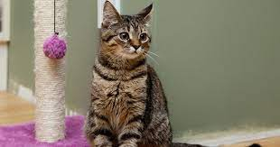

Imagenes de gatos
El gato doméstico12 (Felis silvestris catus), llamado más comúnmente gato, y de forma coloquial minino,3 michino,4 michi,5 micho,6 mizo,7 miz,8 morroño9 o morrongo,10 y algunos nombres más, es un mamífero carnívoro de la familia Felidae. Es una subespecie domesticada por la convivencia con el ser humano.
clic para ver mas lindos gatitos
Lista de gatos
Cosas que los gatos aman:
- Menta gatuna
- Apuntadores láser
lasagna
Cosas que los gatos odian:
- Tratamiento antipulgas
- Truenos
- Otros gatos